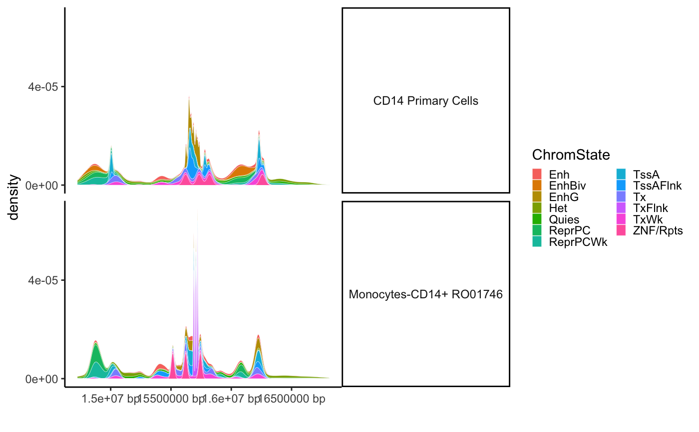

Plot Roadmap query
ROADMAP.track_plot( grl.roadmap.filt, gr.snp = NULL, geom = "density", adjust = 0.2, show_plot = T )
| grl.roadmap.filt | Roadmap query results. |
|---|---|
| gr.snp | Optionally, can include an extra |
| geom | The type of plot to create. Options include "density" and "histogram". |
| adjust | The granularity of the peaks. |
| show_plot | Whether to print the plot. |
data("BST1") finemap_DT <- BST1 gr.snp <- DT_to_GRanges(finemap_DT) grl.roadmap <- ROADMAP.query(results_path="./Roadmap", gr.snp=gr.snp, keyword_query="monocyte")#> [1] "+ ROADMAP:: 2 annotation(s) identified that match `keyword_query`." #> [1] "+ Querying subset from Roadmap API: E124 - 1 / 2" #> [1] "++ Downloading Roadmap Chromatin Marks: E124" #> [1] "cd ./Roadmap && tabix -p bed --begin 2 --end 3 https://egg2.wustl.edu/roadmap/data/byFileType/chromhmmSegmentations/ChmmModels/coreMarks/jointModel/final/E124_15_coreMarks_dense.bed.bgz chr4:14737349-16737284"#> Warning: File '/var/folders/sw/km9819713937hp640lj59ygw0000gn/T//RtmpuHIsxp/file124f064d36c66' has size 0. Returning a NULL data.table.#> Error in `[.data.frame`(x, i, j) : undefined columns selected #> [1] "+ Querying subset from Roadmap API: E029 - 2 / 2" #> [1] "++ Downloading Roadmap Chromatin Marks: E029" #> [1] "cd ./Roadmap && tabix -p bed --begin 2 --end 3 https://egg2.wustl.edu/roadmap/data/byFileType/chromhmmSegmentations/ChmmModels/coreMarks/jointModel/final/E029_15_coreMarks_dense.bed.bgz chr4:14737349-16737284"#> Warning: File '/var/folders/sw/km9819713937hp640lj59ygw0000gn/T//RtmpuHIsxp/file124f07471d040' has size 0. Returning a NULL data.table.#> Error in `[.data.frame`(x, i, j) : undefined columns selected #> [1] "All downloads complete in 0 minutes"grl.roadmap.filt <- ROADMAP.merge_and_process_grl(grl.roadmap=grl.roadmap, gr.snp=gr.snp, n_top_tissues=5) track.roadmap <- ROADMAP.track_plot(grl.roadmap.filt, gr.snp=gr.snp)#> Warning: no non-missing arguments to max; returning -Inf#> Error: Faceting variables must have at least one value